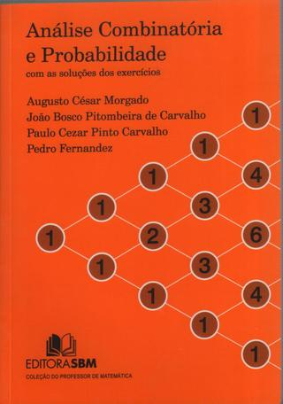

Horário: 3as e 5as, das 8h às 10h.
Início: 20 de agosto de 2013.
Repositório do código criado em sala de aula:
https://github.com/vigusmao/MatComb_2013_2
Ementa muito resumida:
- Técnicas de Contagem
- Relações de Recorrência
- Introdução à Teoria dos Grafos
Não haverá aula nos dias:
- 17/09 (SBPO 2013)
- 19/09 (SBPO 2013)
- 01/10 (Jornada de Iniciação Científica)
- 03/10 (Jornada de Iniciação Científica)
Aulas extras (dúvidas):
- 11/10, às 13h, na sala F2-030
- 27/11, às 12h, na sala F2-030
- 10/12, às 8h, na sala F2-030
Provas:
- P1:
- P2:
- PF:
- 2Ch: 17/12 (segunda chamada apenas para quem perdeu alguma prova), às 8h na sala do DCC
M = (P1 + P2) / 2 ≥ 6.0 --> aprovação direta;
do contrário, MF = (M + PF) / 2 ≥ 5.0 --> aprovação;
MF < 5.0 --> reprovação.
Primeira Lista de Exercícios aqui.
Segunda Lista de Exercícios aqui.
As notas já se encontram digitadas no SIGA.
Bibliografia sugerida
| Análise Combinatória e Probabilidade | Curso de Análise Combinatória e Probabilidade | Applied Combinatorics | |||
| (Morgado, Pitombeira, Carvalho e Fernandes) | (J. R. Julianeli, B. A. Dassie, M. L. Alves de Lima e I. Pereira de Sá) | (Alan Tucker) | |||
|  |  |  |
Conteúdo das aulas
20/08
Introdução à Combinatória. Princípio aditivo. Princípio multiplicativo (Princípio Fundamental da Contagem). Decisões sequenciadas no tempo. Permutações simples. Elementos contados repetidas vezes (dividir no final pelo número de repetições de cada elemento). Técnica da partição (resolvendo as situações do tipo "depende!").
Problema 1: Quantos casais distintos (um homem, uma mulher) poderiam ser formados em uma turma de 40 alunos e 10 alunas?
Problema 2: Quantas bandeiras distintas de três listras poderiam ser coloridas com 3 cores distintas escolhidas de um conjunto de 10 cores?
Problema 3: Quantas novas cores podem ser produzidas da mistura uniforme de 3 tintas de cores distintas escolhidas de um total de 4 cores distintas de tintas?
Problema 4: De quantas maneiras podem se sentar ao redor de uma mesa redonda 5 pessoas (A, B, C, D e E) de forma que duas delas (A e B) não fiquem lado-a-lado?
Problema 5: De quantas maneiras podem se posicionar em linha 7 pessoas (A, B, C, D, E, F e G) de forma que duas delas (A e B) não fiquem lado-a-lado?
22/08
Recomendação geral: começar pelas restrições. Nunca deixar de verificar se cada elemento do conjunto-alvo está sendo contado exatamente uma vez (não mais de uma vez; não zero vezes). Técnica da complementação (relaxamento de restrições seguido da subtração da quantidade de elementos indesejados). Tamanho do intervalo fechado de inteiros [a,b] igual a b-a+1.
Problema 6: Quantos gabaritos possíveis admite uma prova de 10 questões em múltipla escolha, onde cada questão possui 4 opções de resposta?
Problema 7: Quantos cartões de resposta possíveis existem para a prova do problema anterior contendo no máximo 1 questão deixada em branco?
Problema 8: Quantos são os números pares de 4 algarismos (na base 10) com todos os algarismos distintos?
Problema 9: Quantos são os números de 4 algarismos (na base 10) contendo pelo menos 2 algarismos repetidos? [Obs.: Usar complementação aqui é uma boa; quebrar em casos fica muito mais custoso.]
27/08
Combinações simples. Somatório (para p=0,...,n) das combinações de n, p a p = 2^n. Prova por argumento combinatório.
Problema 10: De quantas maneiras uma sala com 10 portas pode estar aberta?
Problema 11: De quantas maneiras pode-se compor uma comissão com 4 alunos de uma turma de 50 alunos?
Problema 12: Quantos são os subconjuntos de um conjunto de n elementos? [Solução 1: por particionamento em tamanhos exatos, cobrindo subconjuntos de tamanhos de 0 a n. Solução 2: através da decisão, um elemento por vez, quanto a levá-lo ou não para o subconjunto que se está construindo.]
Problema 13: De quantas maneiras podemos dividir 12 atletas em 2 equipes de vôlei, cada uma com 6 atletas?
Problema 14: E se as equipes tivessem características que as tornassem distintas, como por exemplo uma equipe principal e uma equipe reserva?
Problema 15: E se quiséssemos dividir aqueles 12 atletas em 3 equipes de 4 atletas cada?
29/08
Permutações com elementos nem todos distintos. Anagramas.
Problema 16: De quantas maneiras pode-se compor uma comissão com 3 alunos e 2 alunas de uma turma de 40 alunos e 10 alunas?
Problema 17: Supondo que José e Maria sejam alunos daquela turma e não possam ser ambos simultaneamente membros da comissão desejada, de quantas maneiras poderemos compô-la?
Problema 18: Quantos são os anagramas da palavra CADERNO? E de CALOTA? E de ARARA?
Problema 19: Quantas são as possíveis sequências de resultados obtidos em 10 lançamentos de um dado nas quais o "1" aparece exatamente 2 vezes, o "6" aparece exatamente 3 vezes, e os demais resultados são todos distintos?
Problema 20: Refaça a questão anterior para 9 lançamentos. [Muda completamente.]
Problema 21: Refaça novamente a questão 19, agora para 8 lançamentos do dado [Muda tudo completamente, mais uma vez.]
Problema 22: Refaça a questão 21, mas considerando que os 3 lançamentos que não são "1" ou "6" não precisam ser distintos.
03/09
Programa em Python para geração e contagem de objetos combinatórios. Código no github.
Problema 23: Quantas são as palavras de 5 letras (de um alfabeto de 26 letras) que possuem a letra A?
Problema 24: Idem, porém a letra A não pode ser a primeira letra da palavra.
Problema 25: Quantas são as palavras de 5 letras que não possuem as letras "CH" aparecendo juntas, nessa ordem?
05/09
Simetrias. Permutações circulares. Número de soluções para a equação diofantina x1 + x2 + ... + xn = p.
Problema 26: Quantas rodas de ciranda podemos formar com 4 crianças?
Problema 27: Quantos bambolês distintos podem ser obtidos pela interconexão de 6 arcos plásticos de cores distintas?
Problema 28: De quantas maneiras podemos pintar as faces (inclusive a face de baixo) de uma imensa escultura na forma de um cubo que está instalada sobre o gramado de um parque, utilizando para isso uma paleta de 6 cores, e sem repetir cor?
Problema 29: E quantos são os cubos distintos que podemos obter pela aplicação das mesmas 6 cores do problema anterior, na situação em que o cubo se encontra "solto no espaço"?
Problema 30: [Revisão] Dado um baralho de 52 cartas (3 de cada naipe), quantas são as extrações de 3 cartas onde a primeira é de copas, a segunda é um rei, e a terceira não é uma dama?
10/09
Combinações completas. Arranjos.
Problema 31: De quantas maneiras podemos compor uma bolsa com 3 frutas selecionadas de uma fruteira contendo 6 frutas (uma banana, uma laranja, uma maçã, uma goiaba, uma manga e uma tangerina)?
Problema 32: Quantas são as possibilidades de se comprar 3 potes de sorvete de 1 litro cada (um sabor por pote) em uma sorveteria que os vende em 6 sabores diferentes?
Problema 33: Quantos números existem entre 0 e 1000 tais que seus algarismos (na base 10) constituem uma sequência monótona não-decrescente?
Problema 34: Quantas palavras de 8 letras (de um alfabeto de 26 letras) existem contendo 3 consoantes distintas e 5 vogais não necessariamente distintas, mas ocorrendo da esquerda para a direita em conformidade com a ordem total A < E < I < O < U?
12/09
Os Lemas de Kaplansky.
Problema 35: De quantas formas podem sentar-se 5 pessoas em um teatro que dispõe de 12 cadeiras alinhadas, sem que haja duas pessoas quaisquer sentadas lado-a-lado?
Problema 36: Qual seria a resposta para o problema anterior se as cadeiras estivessem organizadas circularmente ao redor do palco?
Problema 37: De quantas maneiras pode uma pessoa organizar seus treinos de natação ao longo dos dias da semana, dado que ela pretende nadar 3 dias por semana (durante todo o ano, e sempre nos mesmos dias), de forma que ela jamais nade em dois dias consecutivos?
24/09
Generalização do Primeiro Lema de Kaplansky para espaçamento mínimo r entre elementos selecionados. O Princípio da Inclusão/Exclusão.
Problema 38: De quantas formas podem sentar-se p pessoas em um teatro que dispõe de n cadeiras alinhadas, de forma que haja pelo menos r cadeiras livres entre uma pessoa e a próxima?
Problema 39 (para casa): Generalizar o Segundo Lema de Kaplansky.
Problema 40: Quantos números inteiros de 1 a 100 são múltipos de 3 ou de 5?
Problema 41: Quantos são os anagramas da palavra PINDAMONHANGABA que começam pela letra A ou terminam com a letra G ou tem como segunda letra a letra I?
Problema 42 (revisão): Dados dois conjuntos, D e C, de cardinalidades respectivamente n e m, quantas são as funçõs distintas de D em C? Problema 43 (revisão): Quantas dessas funçõs são injetoras?
Problema 44 (para casa): Quantas são as funçõs sobrejetoras de D em C?
26/09
Enunciados dúbios. Fundamental: saber exatamente que problema queremos resolver.
Problema 45: De quantas maneiras 6 anéis distintos podem ser colocados em 4 dedos? (Suponha que sabemos previamente quais são os 4 dedos, e que os anéis são perfeitamente simétricos.)
Problema 46: De quantas maneiras 6 anéis podem ser colocados em exatamente 4 dos 5 dedos de uma mão?
Problema 47: De quantas maneiras 6 anéis podem ser colocados em no máximo 4 (e em pelo menos 1) dos 5 dedos de uma mão?
Maneiras erradas de se tentar resolver o problema 44. Erros que devem ser evitados.
08/10
Solução do problema 44 usando o Princípio da Inclusão/Exclusão. O paradigma das partículas que vão de um ponto a outro num reticulado movendo-se apenas para cima ou para a direita (ou, analogamente, num ângulo de 45 graus direita/cima ou esquerda/baixo). O Princípio da Reflexão.
Problema 48: De quantas maneiras pode-se ir do ponto (0,0) ao ponto (20, 4) de um reticulado, caminhando-se sempre uma unidade de comprimento para a direita ou uma unidade de comprimento para cima?
Problema 49: Quantas são as possíveis sequências de apuração de votos em uma eleição com 2 candidatos e 20 eleitores, onde não houve votos brancos ou nulos e o primeiro candidato venceu com uma margem de 2 votos?
Problema 50: Idem, porém agora sabe-se que em nenhum momento durante a apuiração dos votos o candidato perdedor esteve à frente no placar.
10/10
O Princípio de Dirichlet: princípio das gavetas, da casa do pombo etc.
Problema 51: Quantas pessoas é preciso haver em um grupo para que se possa garantir que duas delas nasceram no mesmo dia do ano?
Problema 52: Quantos alunos precisam responder à pergunta "Em que dia você prefere fazer a prova de MatComb (com 7 opções de dia para a prova)?" de forma que se possa garantir que pelo menos 5 alunos darão a mesma resposta?
Problema 53: Prove que, se selecionarmos 5 pontos na região fechada delimitada por um quadrado de lado unitário, então sempre haverá dois pontos à distância menor ou igual a sqrt(2)/2 um do outro.
Problema 54: Prove que, se selecionarmos n+1 elementos do conjunto dos inteiros de 1 a 2n, então sempre teremos selecionado dois números x e y tais que x divide y ou vice-versa.
11/10
Aula extra de exercícios.
15/10
Primeira prova.
---- FIM DA PRIMEIRA PARTE DO CURSO ----
24/10
Binômio de Newton.
(Aula ministrada pelo Prof. João Paixão.)
29/10
Resolução das questões da P1.
31/10
Triângulo de Pascal.
05/11
Relações de recorrência.
Problema 55: Encontre o número de maneiras de se subir uma escada de n degraus, subindo-se um ou dois degraus a cada passo.
Problema 56: Em quantas regiões arco-conexas fica subdividido um plano que contém n retas, duas a duas concorrentes, sabendo-se que nenhum ponto do plano pertence a mais de duas retas?
Problema 57: Quantas são as sequências binárias de n bits que não contêm três bits 1 seguidos?
07/11
Relações de recorrência: mais exemplos. Obtendo fórmulas fechadas por substituição.
Problema 58: Quantas são as sequências binárias de n bits que possuem uma quantidade par de bits 1? [Solução 1: Pelo somatório das combinações de n, k a k, para 0 ≤ k ≤ n/2. Solução 2: relação de recorrência obtida pela técnica de se isolar o primeiro passo. Solução 3: por uma bijeção entre o conjunto desejado e o conjunto de todas as sequências de n-1 bits.]
Problema 59: Relação de recorrência para juros simples.
Problema 60: Relação de recorrência para juros compostos.
Problema 61: Relação de recorrência para juros compostos com aporte mensal.
[Obs.: Fórmulas fechadas para todos os problemas acima.]
12/11
Montando relações de recorrência.
Problema 62: De quantos modos n dominós 2x1 simétricos e idênticos podem cobrir um tabuleiro de damas 2xn?
Problema 63: E se os dominós não fossem simétricos?
Problema 64: De quantos modos podem ser ocupadas todas as n vagas alinhadas de um estacionamento utilizando-se carros de passeio brancos, carros de passeio prata, carros de passeio pretos e caminhões, e sabendo-se que caminhões ocupam duas vagas consecutivas?
Problema 65: Uma máquina possue n chaves liga/desliga. Para mudar o estado da j-ésima chave, é preciso que a (j-1)-ésima chave esteja ligada, e todas as chaves desde a (j-2)-ésima até a primeira estejam desligadas. A primeira chave pode sempre ter seu estado alterado, sem restrições. Partindo de um estado inicial onde todas as chaves se encontram desligadas, qual o número mínimo de flips (mudanças de estado de chave) que é suficiente para se deixar a n-ésima chave ligada e todas as demais chaves desligadas?
14/11
Relações de recorrência do tipo "dividir e conquistar". Provando fórmulas fechadas por indução. Obtendo fórmulas fechadas para relações de recorrência homogêneas.
19/11
Introdução à Teoria dos Grafos. Vértice, aresta, digrafo, grau, caminhos e ciclos (hamiltonianos), trilhas e circuitos (eulerianos), teorema sobre a quantidade de vértices de grau ímpar, caracterização de grafos com trilhas/circuitos eulerianos.
21/11
Grafos conexos/desconexos, cíclicos/acíclicos, árvores, fontes, sumidouros, digrafos acíclicos. Grafos bipartidos, coloração de vértices. Grafos completos, cliques.
26/11
Grafos planares (relação de Euler, K5, K3,3, Kuratowski), torneios (existência de um rei).
27/11
Aula extra de exercícios.
28/11
Segunda prova.
03/12
Resolução e entrega da P2.
10/12
Aula de exercícios.
12/12
Prova final.